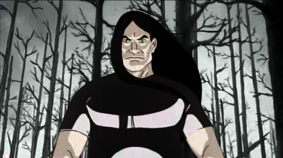

Young Nathan, moments before a truck crashes into his classroom Nathan was raised in New Port Richey, Florida, the sole child of Oscar, implied to have been in the military, and Rose Explosion. Nathan was a very quiet child to the point of being regarded as mute, and did not speak until the age of five. In Dethgov, when his classmates and teacher were killed after he won the election for class president in the second grade, Nathan remained virtually unaffected. He was an unremarkable student in high school, excelling only in frog dissection and football. He eventually dropped out without earning his diploma (though he tried to earn his GED years later).

In Renovationklok, Nathan was present at the signing of the contract for Dethklok. When Roy Cornickelson's son, Damien Cornickelson, insulted him and his taste in music, Nathan responded with a violent punch to the face. Damien carried a grudge against him ever since. Shortly after this, Nathan and Magnus got into a disagreement over leadership of the band, and in a fit of rage, Magnus tried to murder him, stabbing him in the upper shoulder area of his back. Nathan beat him up in response and kicked him out of Dethklok permanently.
Despite Skwisgaar's objections, Dethklok was ordered to find a new rhythm guitarist. The band agrees that if no one can beat Skwisgaar's skill with the guitar, they will allow the band to go without a second guitar. All the applicants failed to match Skwisgaar's godly skill when a Norwegian teenager named Toki Wartooth arrives late to the audition. Though Toki was also no match for the Swedish guitarist, his potential and talent impressed Skwisgaar so much that he let him in Dethklok. That choice skyrocketed the band into untold wealth and fame, and its members became living legends. The name "Dethklok" became a chant universally echoed by fans throughout the entire world.
